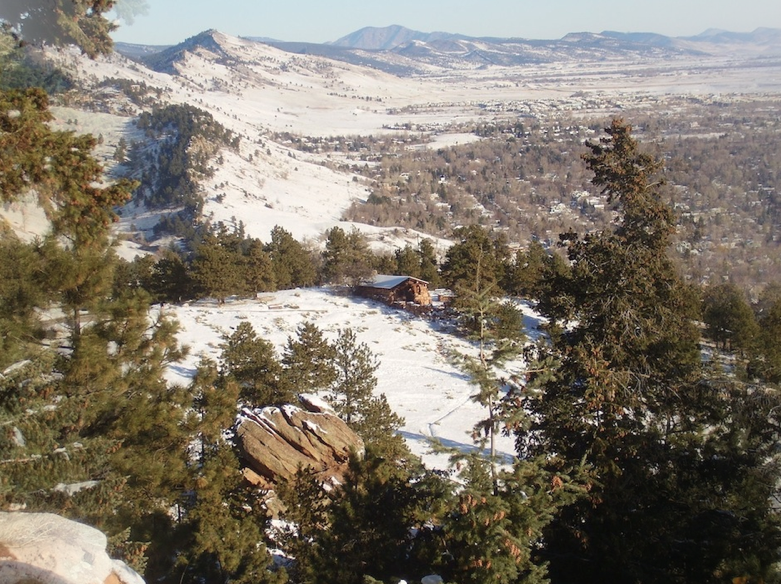

 This canvas (not supported in your browser) shows an animated view of Boulder in the four seasons, made by blending four views. Try Chrome, Firefox, or Safari.
Happy
New
Year
2012
from the
Cundiff Lewis
family!
. . . .
Click on the image to start and stop the chronopanorama.